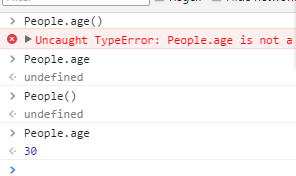
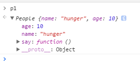
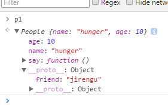

任务35，
function people(){
}
var p1 = new people();
用people 生成了一个对象
typeof p1是对象
p1 instanceof people 输出true
表示P1是people的实例
函数首字母大写表示让该函数作为构造函数去生成对象，明确该函数的特殊功能。
function People(){
this.name = 'hunger';
this.age = 100;
console.log('name:hunger');
}
var p1 = new people();
p1，控制台输出 people{name:'hunger',age:100}
类似var obj = {name:'hunger',age:100}
对象，拥有属性和方法
通过p1.name访问，输出‘hunger’
var p1 = new People();
var p2 = new People();
生成了每个对象，里面的内容都一样，他们各自不相关，只是有相同的name和age.
例如p1.name = 'valley' 就把p1.name改成'valley'
而p2不会受到影响
让一些关键的特性可以指定。可以把作为构造函数的函数改造成
function People(name,age,){
this.name = name;
this.age = age;
}
var p1 = new People('hunger',100);
var p2 = new People('valley',30);
这里this指向p1,p2，这个就可以生成里面的值不一样但是表达功能一样，而不用p1.name='hunger'在去改，更方便。
光有属性不够，给他添加些方法();
function People(name,age){
this.name = name;
this.age = age;
this.say = function(){
console.log(this.name +'说:我'+this.age+'岁')；
}
}
添加变量把变量绑定在构造函数的对象上，作为它的属性
function People(name,age){
var sex = 'boy';
this.name = name;
this.age = age;
People.age = 30;
this.say = function(){
console.log(this.name +'说:我'+this.age+'岁')；
}
}
这里的People.age和p1,p2没有任何关系。
People是个函数，但是函数也是对象的一个实例，所以里面的People.age相当于它的属性。当执行People()后，People.age可以访问这个属性里的值。，因里面的this.age是调用他的对象绑定属性，所以里面的People.age和调用他的对象（this）没有关系，所以，People.age只和函数本身People有关系（绑定了一个属性）
p1有_proto_，里面又有一个_proto_
这些是什么？
People.prototype是个对象，任何函数都有prototype这个属性对应的是一个属性
People.prototype中就有了这friend属性
p1.friend可以访问到
原型是什么？原来的构造函数自己带有的一片区域，如果通过这个构造函数生成了一个个实例，那么那一个个实例都有这个原型(prototype)
p1和p2共享People.prototype这个属性
prototype默认拥有constructor和__proto__两个属性。
任何函数都有prototype这个属性，而这个属性是个对象，所以又可以给他添加一个属性，属性里面是一个函数。


